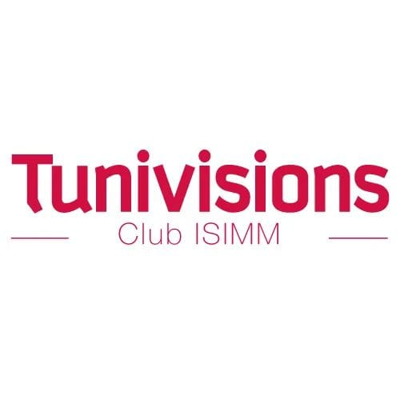
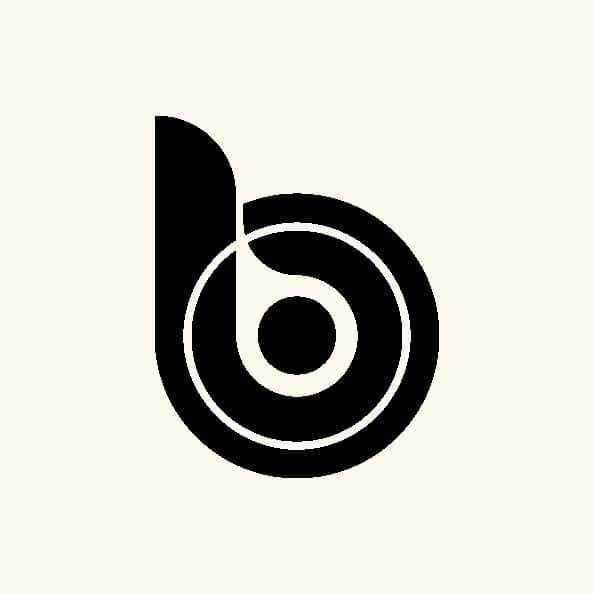

Les divers clubs artistiques et culturels à l'ISIMM forment une palette vibrante où les étudiants explorent leur passion.Ces clubs offrent un espace d'inspiration et de partage, où les talents s'épanouissent et les horizons s'ouvrent.
Clubs d'informatique Club d'Electronique Autre Clubs EvénementsAu sein de la faculté de l'ISIMM, la richesse de la vie étudiante ne se limite pas aux domaines de l'informatique et de l'électronique. Divers clubs florissent, couvrant un éventail étendu d'intérêts. Des clubs artistiques stimulent la créativité, offrant aux étudiants la possibilité d'explorer les arts visuels et la production artistique. Les clubs de langues, tels que le club d'anglais, encouragent l'apprentissage linguistique et la compréhension interculturelle.

